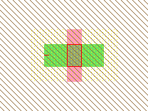
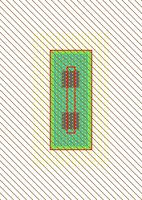
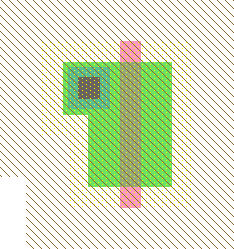

<!-- NEED 4in -->

<!-- HEADER 1-10-6: IC Layout Tutorial: Adding Contacts to a Transistor -->

<TABLE><TR><TD>
Очень распространённая конструкция  в IC layout это комбинация транзистор-контакт.
Далее рассказывается как это правильно сделать.
<P>
<TABLE><TR>
<TD><CENTER></CENTER></TD><TD>
<UL>
<LI>Выберите транзистор (на примере слева n-транзистор).</LI>
<LI>Поверните транзистор, чтобы затвор был вертикально.
Чтобы сделать это, используйте команду<B>90 Degree Counterclockwise</B>
(в меню <B>Edit / Rotate</B>), или просто нажмите Control-J.</LI>
<LI>Выбрана область слева от затвора (это только линия).</LI>
</UL>
</TD><TD><CENTER></CENTER></TD></TR></TABLE>
<P>
<TABLE><TR>
<TD><CENTER></CENTER></TD><TD>
Хотя размер транзистора по умолчанию 2x3, большинство людей хотят сделать его шире.
Например в этом примере, создаётся транзистор шириной 12.
To do this, select the node and use the <B>Object Properties</B> command
Чтобы это сделать, выберите узел и выполните команду <B>Object Properties</B>.
(в меню <B>Edit / Properties</B>).
Более лёгкий способ вызвать диалоговое окно с настройками объекта это двойной клик на узле,
или выбрать объект и нажать горячую клавишу Control-I.
Когда вы увидите диалоговое окно "node Properties", сделайте ширину равной 12 и нажмите OK.
</TD><TD><CENTER></CENTER></TD></TR></TABLE>

<TABLE><TR>
<TD><CENTER></CENTER></TD><TD>
Далее Вам необходим контакт.
Выберите "Metal-1-N-Active-Con" для соединения N-Active с Metal-1.
Установите размер контакта 5x12 вместо значения по умолчанию 5x5.
Контакт является "сообразительным" и поэтому добавил поле к узлу.
Порт так же увеличился вместе с узлом (внутренний прямоугольник).
</TD><TD><CENTER></CENTER></TD></TR></TABLE>
<P>
Дизайнеры , кто имел опыт использования полигон-ориентированных систем могут попытаться создать
два узла вместе, получив следующую структуру:
<P>
<CENTER><TABLE><TR><TD><CENTER></CENTER></TD>
<TD><CENTER><FONT SIZE="7">ЭТО ОШИБКА!</FONT></CENTER><BR>
Electric это связи-ориентированную систему, и компоненты должны быть связанны между собой проводником.
</TD></TR></TABLE></CENTER>
<P>
Наиболее простой путь для соединения контакта и транзистора это сшить узлы вместе,
а затем сдвинуть их вместе.
<P>
<TABLE><TR>
<TD><CENTER></CENTER></TD><TD>
Эти две фигуры показывают транзисторный и контактный узел, сшитые вместе, и соединённые дугой.
На левом рисунке изображён узел и его порт, на правом дуга.
</TD><TD><CENTER></CENTER></TD></TR></TABLE>
<P>
Дуга может быть создана посредством выбора одного узла,
кликните и УДЕРЖИВАЙТЕ <I><A HREF="chap01-08.html#chap01-08">right</A></I> клавишу мыши,
переместите курсор мыши к другому компоненту и для создания дуги отпустите клавишу мыши.
<P>
Конец дуги находиться в центре дуги на расстоянии половины ширины дуги от конца
(на правом рисунке Вы видите конец дуги, обозначенный "+").
Конец дуги должен быть внутри порта.
Во время передвижения конца дуги, подключённой к порту, сам узел остаётся неподвижным.
Смотрите <A HREF="chap05-04-03.html#chap05-04-03">Section 5-4-3</A> с дополнительной информацией
о геометрии дуг.
<P>

<CENTER><TABLE><TR><TD><CENTER></CENTER></TD>
<TD><CENTER><FONT SIZE="7">ЭТО ПРАВИЛЬНО!</FONT></CENTER><BR>
Теперь узлы соединены друг с другом и можно заморозить контакт.
Дуга сократилась до квадрата и конечные точки находятся очень близко друг от друга.
Если Вы сделаете дугу неизменяемой, то два узла жёстко будут связанны вместе.
Чтобы это сделать, используйте команду <B>Rigid</B> (из меню <B>Edit / Arc</B>).
Как видно из рисунка, буква "R" на выбранной дуге говорит что дуга жёсткая.
Смотрите <A HREF="chap05-02-01.html#chap05-02-01">Section 5-2-1</A> для дополнительной информации
о дугах.
</TD></TR></TABLE></CENTER>
<P>
Другая распространённая ситуация - создание контакта у транзистора с другим размером.
На этом примере контакт обычного размера.
<P>

<TABLE><TR>
<TD><CENTER></CENTER></TD><TD>
Дуга начинается из центра порта контакта и заканчивается на верхней части порта транзистора.
Финальный layout показан справа.
</TD><TD><CENTER></CENTER></TD></TR></TABLE>
<P>
Некоторые замечания о подсоединении узлов и дуг:
<UL>
<LI>Благодаря этому, система понимает Вашу схему и использует эту информацию 
во многих других местах.</LI>
<LI>DRC( design-rule checker) использует эту информацию для проверки объектов.</LI>
<LI>После того как вы сделали структуру возможно её скопировать любое количество раз.
Используйте команды <B>Copy</B> и <B>Paste</B> (в меню <B>Edit</B>).
Для помещения структуры из буфера на схеме не должны быть выделены элементы, иначе
система попытается заменить выделенные элементы элементом из буфера.
Для получения дубликата схемы, выберите её, <B>Copy</B>, кликните в любом месте для,
отмены выделения а затем используйте команду <B>Paste</B>.
<LI>Если Вы хотите сделать вращение или отражение структуры,
выберите всё необходимое (и узлы и дуги) и используйте команды <B>Rotate</B> или
<B>Mirror</B> (в меню <B>Edit</B>).</LI>
</UL>

<!-- TRAILER -->
